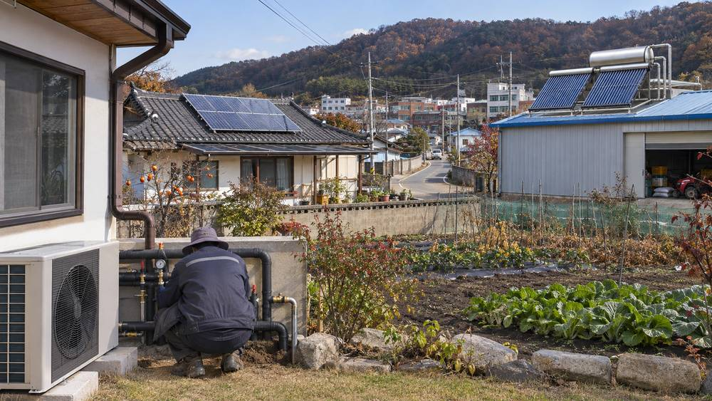

전남광주 융복합 국비 275억, 내년 1만1,300곳 보급

2027년 26개 시군구 주택·건물에 태양광 3만6,891㎾ 등을 놓는다. 총사업비 982억 원 가운데 민간 부담은 156억 원이다.
내년 정부 재생에너지 보급 융복합지원사업에서 전남광주통합특별시가 받는 국비가 275억 원으로 정해졌다. 시는 11월 20일 이 금액이 올해보다 10.6% 늘어난 것으로 전국에서 가장 크다고 밝혔다. 설비가 들어갈 곳은 26개 시군구 1만1,300곳으로 올해보다 2,188곳 늘었다.
이 사업은 집과 가게·공장, 공공시설이 모인 구역에 태양광·태양열·지열 가운데 두 종류 이상을 한 번에 설치하도록 나라가 돕는 제도다. 시는 지역마다 에너지를 쓰는 모양에 맞춰 설비를 골라 주민이 내는 에너지 비용을 낮추려는 사업이라고 설명했다. 설비별로는 태양광 3만6,891㎾와 지열 3,063㎾, 태양열 1만7,930㎡(면적 기준)가 보급된다. 총사업비(국비·지방비·민간 부담을 합친 금액)는 982억 원으로 올해보다 128억 원 늘었다. 재원은 국비 275억 원과 지방비 551억 원이 대부분이고, 민간이 156억 원을 낸다.
준비 과정에서 시는 녹색에너지연구원과 함께 지역마다 보급 수요를 조사하고, 사업계획과 컨설팅, 공모 대응까지 챙겼다. 이 사업과 별도로 주택 대상 재생에너지 보급도 하고, 공공기관·에너지협동조합과 함께 공공 유휴부지에 태양광 발전시설을 늘리고 있다. 배용석 에너지산업본부장은 "지역별 특성과 주민 수요를 반영한 재생에너지 보급사업을 계속 확대하겠다"고 말했다.
같은 공모에서 대구시는 7개 구·군 531곳에 설비 1,850㎾를 놓는 사업으로 국비 8억3,000만 원을 받는다고 11월 17일 밝혔다. 충남 당진시는 11월 25일 2027년 사업에 선정됐다고 밝혔다. 2024년을 뺀 2020~2027년 8년 동안 7번 뽑혔고, 이 기간 220억 원으로 1,777곳에 설비를 보급한다.
시민에너지 관점
국비 275억 원과 1만1,300곳은 전국에서 가장 큰 규모지만, 이 사업은 집과 건물마다 설비를 따로 다는 방식이라 혜택이 각 소유주의 전기요금 절감에 머문다. 지붕이 없는 세입자나 설비를 놓기 어려운 주민에게는 돌아갈 몫이 작다는 걱정이 나올 수 있다. 시가 함께 밝힌 에너지협동조합과의 공공 유휴부지 태양광은 주민이 출자하고 수익을 나눌 수 있는 방식이라 그 빈틈을 메울 수 있다. 시와 시군구는 융복합 예산을 짜는 만큼 공공부지 시민 출자 발전소의 계획과 일정도 함께 내놓아야 한다.
출처: 전남광주통합특별시 2026-11-20 보도자료 「전남광주통합특별시, 재생에너지 보급 국비 275억 확보」(태양광산업과, 붙임 hwpx) 원문 보기
출처: 대구광역시 2026-11-17 시정소식 「대구시, ‘재생e 융복합지원사업’ 선정… 국비 8억 3천만 원 확보」(물에너지산업과) 원문 보기
출처: 당진시 2026-11-25 보도자료 「당진시, 2027년 재생에너지 융복합 지원사업 공모 선정」(미래에너지과) 원문 보기